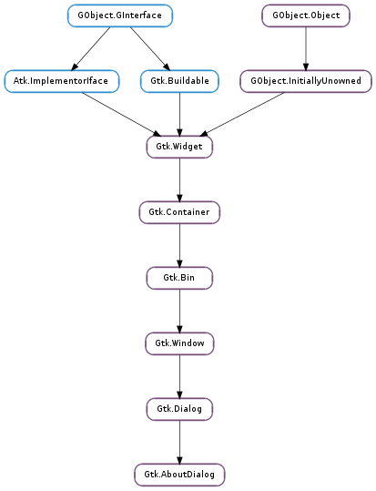

| static | new() |
| add_credit_section(section_name, people) | |
| get_artists() | |
| get_authors() | |
| get_comments() | |
| get_copyright() | |
| get_documenters() | |
| get_license() | |
| get_license_type() | |
| get_logo() | |
| get_logo_icon_name() | |
| get_program_name() | |
| get_translator_credits() | |
| get_version() | |
| get_website() | |
| get_website_label() | |
| get_wrap_license() | |
| set_artists(artists) | |
| set_authors(authors) | |
| set_comments(comments) | |
| set_copyright(copyright) | |
| set_documenters(documenters) | |
| set_license(license) | |
| set_license_type(license_type) | |
| set_logo(logo) | |
| set_logo_icon_name(icon_name) | |
| set_program_name(name) | |
| set_translator_credits(translator_credits) | |
| set_version(version) | |
| set_website(website) | |
| set_website_label(website_label) | |
| set_wrap_license(wrap_license) |
| Name | Type | Flags | Description |
|---|---|---|---|
| artists | list | r/w | List of people who have contributed artwork to the program |
| authors | list | r/w | List of authors of the program |
| comments | str | r/w | Comments about the program |
| copyright | str | r/w | Copyright information for the program |
| documenters | list | r/w | List of people documenting the program |
| license | str | r/w | The license of the program |
| license-type | Gtk.License | r/w | The license type of the program |
| logo | GdkPixbuf.Pixbuf | r/w | A logo for the about box. If this is not set, it defaults to Gtk.Window.get_default_icon_list () |
| logo-icon-name | str | r/w | A named icon to use as the logo for the about box. |
| program-name | str | r/w | The name of the program. If this is not set, it defaults to GLib.get_application_name () |
| translator-credits | str | r/w | Credits to the translators. This string should be marked as translatable |
| version | str | r/w | The version of the program |
| website | str | r/w | The URL for the link to the website of the program |
| website-label | str | r/w | The label for the link to the website of the program |
| wrap-license | bool | r/w | Whether to wrap the license text. |
| Name | Parameters | Return | Description |
|---|---|---|---|
| activate-link | str | bool | The signal which gets emitted to activate a URI. Applications may connect to it to override the default behaviour, which is to call Gtk.show_uri (). |
| Name | Type | Access |
|---|---|---|
| parent_instance | Gtk.Dialog | r |
Bases: Gtk.Dialog
The Gtk.AboutDialog offers a simple way to display information about a program like its logo, name, copyright, website and license. It is also possible to give credits to the authors, documenters, translators and artists who have worked on the program. An about dialog is typically opened when the user selects the About option from the Help menu. All parts of the dialog are optional.
About dialog often contain links and email addresses. Gtk.AboutDialog displays these as clickable links. By default, it calls Gtk.show_uri () when a user clicks one. The behaviour can be overridden with the Gtk.AboutDialog ::activate-link signal.
To make constructing a Gtk.AboutDialog as convenient as possible, you can use the function Gtk.show_about_dialog () which constructs and shows a dialog and keeps it around so that it can be shown again.
Note that GTK+ sets a default title of _("About &percnts") on the dialog window (where &percnts is replaced by the name of the application, but in order to ensure proper translation of the title, applications should set the title property explicitly when constructing a Gtk.AboutDialog, as shown in the following example:
gtk_show_about_dialog (NULL,
"program-name", "ExampleCode",
"logo", example_logo,
"title" _("About ExampleCode"),
NULL);
It is also possible to show a Gtk.AboutDialog like any other Gtk.Dialog, e.g. using Gtk.Dialog.run (). In this case, you might need to know that the ‘Close’ button returns the Gtk.ResponseType.CANCEL response id.
| Returns: | a newly created Gtk.AboutDialog |
|---|---|
| Return type: | Gtk.Widget |
Creates a new Gtk.AboutDialog.
| Parameters: |
|---|
Creates a new section in the Credits page.
| Returns: | A None-terminated string array containing the artists. The array is owned by the about dialog and must not be modified. |
|---|---|
| Return type: | [str] |
Returns the string which are displayed in the artists tab of the secondary credits dialog.
| Returns: | A None-terminated string array containing the authors. The array is owned by the about dialog and must not be modified. |
|---|---|
| Return type: | [str] |
Returns the string which are displayed in the authors tab of the secondary credits dialog.
| Returns: | The comments. The string is owned by the about dialog and must not be modified. |
|---|---|
| Return type: | str |
Returns the comments string.
| Returns: | The copyright string. The string is owned by the about dialog and must not be modified. |
|---|---|
| Return type: | str |
Returns the copyright string.
| Returns: | A None-terminated string array containing the documenters. The array is owned by the about dialog and must not be modified. |
|---|---|
| Return type: | [str] |
Returns the string which are displayed in the documenters tab of the secondary credits dialog.
| Returns: | The license information. The string is owned by the about dialog and must not be modified. |
|---|---|
| Return type: | str |
Returns the license information.
| Returns: | a Gtk.License value |
|---|---|
| Return type: | Gtk.License |
Retrieves the license set using Gtk.AboutDialog.set_license_type ()
| Returns: | the pixbuf displayed as logo. The pixbuf is owned by the about dialog. If you want to keep a reference to it, you have to call GObject.Object.ref () on it. |
|---|---|
| Return type: | GdkPixbuf.Pixbuf |
Returns the pixbuf displayed as logo in the about dialog.
| Returns: | the icon name displayed as logo. The string is owned by the dialog. If you want to keep a reference to it, you have to call GLib.strdup () on it. |
|---|---|
| Return type: | str |
Returns the icon name displayed as logo in the about dialog.
| Returns: | The program name. The string is owned by the about dialog and must not be modified. |
|---|---|
| Return type: | str |
Returns the program name displayed in the about dialog.
| Returns: | The translator credits string. The string is owned by the about dialog and must not be modified. |
|---|---|
| Return type: | str |
Returns the translator credits string which is displayed in the translators tab of the secondary credits dialog.
| Returns: | The version string. The string is owned by the about dialog and must not be modified. |
|---|---|
| Return type: | str |
Returns the version string.
| Returns: | The website URL. The string is owned by the about dialog and must not be modified. |
|---|---|
| Return type: | str |
Returns the website URL.
| Returns: | The label used for the website link. The string is owned by the about dialog and must not be modified. |
|---|---|
| Return type: | str |
Returns the label used for the website link.
| Returns: | True if the license text is wrapped |
|---|---|
| Return type: | bool |
Returns whether the license text in about is automatically wrapped.
| Parameters: | artists ([str]) – a None-terminated array of strings |
|---|
Sets the strings which are displayed in the artists tab of the secondary credits dialog.
| Parameters: | authors ([str]) – a None-terminated array of strings |
|---|
Sets the strings which are displayed in the authors tab of the secondary credits dialog.
| Parameters: | comments (str or None) – a comments string |
|---|
Sets the comments string to display in the about dialog. This should be a short string of one or two lines.
| Parameters: | copyright (str or None) – the copyright string |
|---|
Sets the copyright string to display in the about dialog. This should be a short string of one or two lines.
| Parameters: | documenters ([str]) – a None-terminated array of strings |
|---|
Sets the strings which are displayed in the documenters tab of the secondary credits dialog.
| Parameters: | license (str or None) – the license information or None |
|---|
Sets the license information to be displayed in the secondary license dialog. If license is None, the license button is hidden.
| Parameters: | license_type (Gtk.License) – the type of license |
|---|
Sets the license of the application showing the about dialog from a list of known licenses.
This function overrides the license set using Gtk.AboutDialog.set_license ().
| Parameters: | logo (GdkPixbuf.Pixbuf or None) – a GdkPixbuf.Pixbuf, or None |
|---|
Sets the pixbuf to be displayed as logo in the about dialog. If it is None, the default window icon set with Gtk.Window.set_default_icon () will be used.
| Parameters: | icon_name (str or None) – an icon name, or None |
|---|
Sets the pixbuf to be displayed as logo in the about dialog. If it is None, the default window icon set with Gtk.Window.set_default_icon () will be used.
| Parameters: | name (str) – the program name |
|---|
Sets the name to display in the about dialog. If this is not set, it defaults to GLib.get_application_name ().
| Parameters: | translator_credits (str or None) – the translator credits |
|---|
Sets the translator credits string which is displayed in the translators tab of the secondary credits dialog.
The intended use for this string is to display the translator of the language which is currently used in the user interface. Using gettext(), a simple way to achieve that is to mark the string for translation: gtk_about_dialog_set_translator_credits (about, _("translator-credits")); It is a good idea to use the customary msgid “translator-credits” for this purpose, since translators will already know the purpose of that msgid, and since Gtk.AboutDialog will detect if “translator-credits” is untranslated and hide the tab.
| Parameters: | version (str or None) – the version string |
|---|
Sets the version string to display in the about dialog.
| Parameters: | website (str or None) – a URL string starting with “http://” |
|---|
Sets the URL to use for the website link.